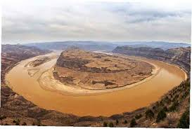
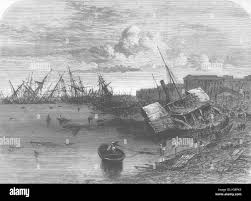
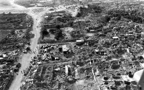
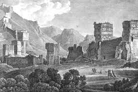
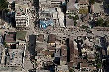

10 disastri naturali
- L'alluvione della Cina del 1931, o alluvione del fiume Yangtze-Huai del 1931, fu una serie di devastanti inondazioni avvenute nella Repubblica Cinese tra il giugno e il novembre del 1931, colpendo città importanti come Wuhan e Nanchino e culminando con la rottura degli argini del lago Gaoyou il 25 agosto 1931

- L'alluvione del Fiume Giallo del 1887 fu una devastante inondazione del Fiume Giallo che colpì la Cina settentrionale. L'alluvione iniziò nel settembre 1887 e uccise tra le 900 000 e le 2 000 000 persone. È stato uno dei disastri naturali più mortali mai registrati.
- Il terremoto dello Shaanxi, o terremoto della Contea di Hua o terremoto di Jiajing, è il più grave terremoto documentato per numero di vittime, circa 830.000. Avvenne la mattina del 23 gennaio 1556 nella provincia di Shaanxi, in Cina.
- Il terremoto di Tangshan fu un disastro naturale del 28 luglio 1976. Fu il più grave terremoto del XX secolo in termini di numero di morti.
- Il ciclone Bhola fu un ciclone tropicale che colpì il Pakistan Orientale e il Bengala Occidentale, in India.

- Il 23 dicembre, un'onda anomala di circa 7.6 metri colpì la città di Dhanushkodi sul lato sud orientale di Pamban, inondando la città e ribaltando un treno sulla linea Dhanushkodi-Pamban, uccidendo tutti i 150 occupanti

- Il terremoto di Haiyuan del 1920 è stato un violentissimo terremoto avvenuto il 16 dicembre 1920, con epicentro situato nella regione di Haiyuan, nella Repubblica di Cina. L'epicentro distava circa 8 km dalla città di Haiyuan.

- Il terremoto di Antiochia del 526 è stato un evento sismico verificatosi, probabilmente, tra il 20 e il 29 maggio di quell'anno. La magnitudo stimata dell'evento fu di 7.0 della scala Richter e l'epicentro fu nei pressi di Antiochia di Siria, nell'attuale Turchia, a quel tempo parte della Siria bizantina.

- Il terremoto di Haiti del 2010 è stato un terremoto catastrofico di magnitudo 7,0 MW con epicentro localizzato a circa 25 chilometri in direzione ovest-sud-ovest della città di Port-au-Prince, capitale dello Stato caraibico di Haiti.